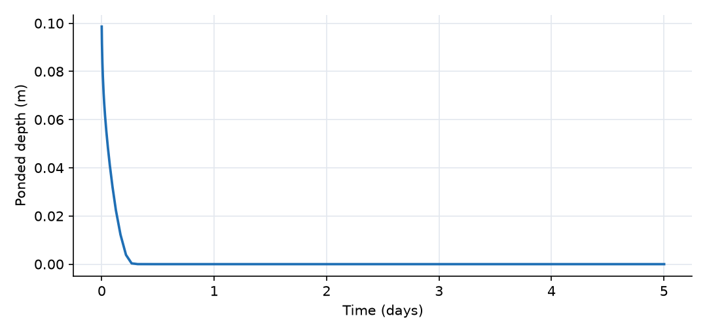
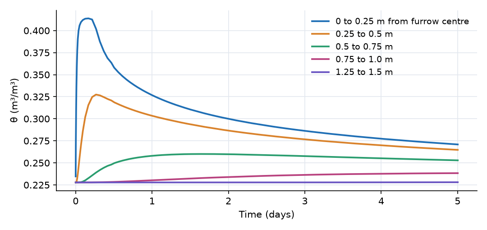
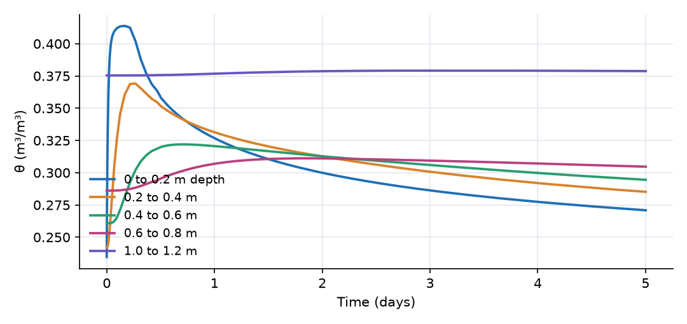
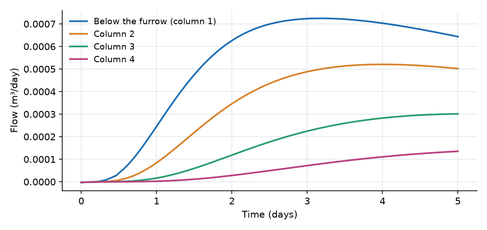

What this model represents
When water infiltrates from a narrow source, such as an irrigation furrow, a drip line, an infiltration trench or a leaking pipe, it does not move straight down. Capillary suction in the drier soil around the source pulls water sideways while gravity pulls it down, and the wetted zone takes the shape of a bulb. How wide the bulb gets decides, for example, how far apart furrows or drip lines can be, and how much of the applied water ends up below the root zone.
A one-dimensional column cannot show this. This model is a vertical cross-section through the soil perpendicular to a furrow, 2 m wide and 1.2 m deep, discretized into a grid of 8 × 6 soil cells that are connected both vertically and horizontally. Because a furrow is symmetric about its centreline, only half of it is modelled: the left edge of the grid is the furrow centreline and carries no flow. All results are per metre of furrow length.
Grids like this one can be generated in the OpenHydroQual interface with the grid generator, which creates the cells and the horizontal and vertical links in one step.
How it works
The expressions below are from unsaturated_soil.json, the current soil plugin.
Soil cells. Every cell is a Soil block with the same loam properties (θₛ = 0.43, θᵣ = 0.078, α = 3.6 1/m, n = 1.56, K_sat = 0.25 m/day). Moisture content, effective saturation and pressure head follow the van Genuchten relationships:
θ = S/(A·d), Sₑ = (θ − θᵣ)/(θₛ − θᵣ) limited to 0.001 to 0.999 ψ = −(1/α)·(Sₑ^(−1/m) − 1)^(1/n), m = 1 − 1/n
and the total head is H = z_bottom + d + ψ (pressure head referred to the top of the cell). In this model A is the cell's plan area (0.25 m × 1 m) and d its height (0.2 m). The 1D Infiltration and Soil Boundary Conditions example gives the full set of soil equations, including the treatment of saturation.
Vertical links (soil_to_soil_link) compute their length and area from the two cells:
Q = K_eff · (H_upper − H_lower)/L · A, L = (d₁ + d₂)/2
Horizontal links (soil_to_soil_H_link) take the face area and the distance between cell centres as properties (0.2 m² and 0.25 m):
Q = K_eff · (H₁ − H₂)/L · A_face
Both cells in a row have the same elevation, so a horizontal flow is driven only by the difference in pressure head: water moves sideways by capillarity. In both link types
K_eff = K_sat · [1 − (1 − Sₑ^(1/m))^m]²
using the larger of the two cells' Sₑ and the mean of their m. For the horizontal link K_sat is the mean of the two cells' K_sat multiplied by their aniso_ratio. The anisotropy ratio is 1 here (isotropic soil); setting it above 1 makes horizontal flow easier, as in a layered soil.
Furrow. The furrow is a Catchment block over the first column, connected to Soil_1_1 by a surfacewater_to_soil_link:
Q = K_sat · (H_furrow − H_cell)/(d/2) · A · h_p/(h_p + 0.001 m)
where H_furrow = 0 m + h_p and h_p is the ponded depth. It starts with h_p = 0.1 m.
Boundaries. The left edge (the furrow centreline) and the right edge (2 m away) have no links, so no water crosses them. The soil surface outside the furrow is closed: there is no rain and no evaporation. Each bottom cell exchanges water with the water table at −1.2 m through Q = K_eff·(H − H_wt)/(d/2)·A.
Initial condition. All cells start in hydrostatic equilibrium with the water table (H = −1.2 m everywhere, given the top-of-cell head reference), so nothing moves until the furrow is filled.
What to look for in the results
- Furrow infiltration. The 25 L in the half-furrow infiltrates in about 6 hours (the furrow is empty at day 0.26). The initial rate is 0.68 m³/day per metre of furrow, falling as the soil under the furrow wets up.
- Shape of the wetting bulb. Six hours after irrigation, the cell under the furrow is nearly saturated (θ = 0.41), the wetting has reached about 0.6 m deep and 0.5 m sideways, and the soil 0.75 m from the centreline has not yet changed. After one day the top row reads θ = 0.327, 0.303, 0.258, 0.230 in columns 1 to 4. The bulb is about as wide as it is deep: in this fine-textured soil with a moderately dry start, capillary spreading is comparable to gravity drainage over the first day.
- Redistribution. After the furrow empties, the cells nearest the source drain and the water spreads further out and down. By day 5 the top row has evened out (θ = 0.271 under the furrow down to 0.238 at 0.75 to 1.0 m), and cells beyond 1.25 m from the centre are still at their initial moisture.
- Delayed and widened recharge. Almost nothing reaches the water table during the first day. Recharge under the furrow peaks after about 3 days, and by day 5 it is spread across the first five columns (1.25 m), five times the width of the half-furrow. By day 5, 5.5 L of the 25 L applied (22%) has reached the water table and the rest is still held in the soil.
- Water balance. Water applied (24.7 L in the half-furrow) = change in soil storage (19.1 L) + recharge (5.5 L).
Assumptions and limitations
- The cross-section is two dimensional: flow along the furrow is ignored, and the furrow is assumed long and uniform.
- The grid is coarse (0.25 m × 0.2 m). The wetting front is smeared over one or two cells, and finer cells near the furrow would sharpen it at the cost of run time.
- The soil is homogeneous and isotropic, with no root uptake, no evaporation and no rain.
- The furrow is filled once and instantly, and its wetted perimeter is represented only by its flat bottom over the first column. Infiltration through the furrow side walls is not represented.
- Because the soil plugin refers each cell's head to its top, the link to the water table and the furrow link use a distance of half a cell thickness from that reference. The internal links are unaffected because all cells have the same size.
Model diagram
Hover a block or link to see its name and type. Arrows show the positive flow direction.
Components
Click a component to see every property set in the model file, with units and meaning.
Blocks 50
Storage compartments: each holds water (and dissolved or particulate mass) and has a state that evolves in time.
FurrowCatchmentHalf of a 0.5 m wide irrigation furrow, seen in cross-section (the model uses the symmetry plane through the furrow centre as its left edge). It starts with 0.1 m of water over its 0.25 m² footprint per metre of furrow length (25 L), which is the only water added. It is a Catchment block with no outlet; the Manning coefficient is required by the block type but unused.
Catchment: Catchment
| Property | Value | Unit | Meaning |
|---|---|---|---|
| Manning's Roughness Coefficient | 0.03 | The Manning's roughness coefficient representing surface resistance to flow. Typical values vary by land cover type. | |
| Catchment area | 0.25 | m2 | Total horizontal surface area of the catchment. Used to compute initial storage and flow-related parameters. |
| Average water depth | 0.1 | m | The initial depth of the standing water before the simulation start time. Most of the times, this value is zero |
| Mean elevation of the catchment | 0 | m | The elevation of the centroid of the catchment based on the model datum. |
48 × SoilSoil · unsaturated_soil48 loam cells in 8 columns and 6 rows, named Soil_column_row (Soil_1_1 is under the furrow at the surface, Soil_8_6 is at the far bottom corner). Each is 0.25 m wide, 0.2 m tall and 1 m deep into the page. Loam van Genuchten parameters from Carsel and Parrish (1988). The initial moisture is in hydrostatic equilibrium with the water table, from θ = 0.228 in the top row to θ = 0.375 in the bottom row.
Soil_1_1, Soil_2_1, Soil_3_1, Soil_4_1, Soil_5_1, Soil_6_1, Soil_7_1, Soil_8_1 …
Showing properties of Soil_1_1.
Soil: Variably Saturated Soil Block
| Property | Value | Unit | Meaning |
|---|---|---|---|
| Saturated Hydraulic Conductivity | 0.25 | m/day | Saturated Hydraulc Conductivity |
| Van Genuchten's alpha parameter | 3.6 | 1/m | Van Genuchten's alpha parameter |
| Bottom Area of the soil block | 0.25 | m2 | Bottom Area of the soil block |
| Bottom Elevation of the soil block | -0.2 | m | Bottom Elevation of the soil block |
| Depth of the soil block | 0.2 | m | Depth of the soil block |
| Van Genuchten's n parameter | 1.56 | Van Genuchten's n parameter | |
| Specific storage | 0.01 | 1/m | Specific storage |
| Initial Moisture Content | 0.2278 | Initial Moisture Content; Moisture Content | |
| Residual Moisture Content | 0.078 | Residual Moisture Content | |
| Saturated Moisture Content | 0.43 | Saturated Moisture Content |
Water_tablefixed_headA fixed water table at −1.2 m elevation, the base of the domain.
fixed_head: Fixed-head boundary
| Property | Value | Unit | Meaning |
|---|---|---|---|
| Initial Storage | 100000 | m3 | |
| Head | -1.2 | m |
Links 91
Connections that move water (and the mass it carries) between blocks.
Furrow_infiltrationsurfacewater_to_soil_link · unsaturated_soilMoves ponded water from the furrow into Soil_1_1. Positive downward.
surfacewater_to_soil_link: Surfacewater to soil connector
42 × soil_to_soil_H_linksoil_to_soil_H_link · unsaturated_soil35 horizontal links between neighbouring cells in the same row (named H_12_1 for columns 1 to 2 in row 1, and so on). Face area 0.2 m² (cell height × 1 m), length 0.25 m. Positive from the lower-numbered to the higher-numbered column, i.e. away from the furrow.
H_12_1, H_23_1, H_34_1, H_45_1, H_56_1, H_67_1, H_78_1, H_12_2 …
Showing properties of H_12_1.
soil_to_soil_H_link: Horizontal soil to soil connector
| Property | Value | Unit | Meaning |
|---|---|---|---|
| Interface area | 0.2 | m2 | Interface area |
| Length | 0.25 | m | Length |
40 × soil_to_soil_linksoil_to_soil_link · unsaturated_soil40 vertical links between neighbouring cells in the same column (named V_1_12 for rows 1 to 2 in column 1, and so on). Positive downward.
V_1_12, V_2_12, V_3_12, V_4_12, V_5_12, V_6_12, V_7_12, V_8_12 …
Showing properties of V_1_12.
soil_to_soil_link: Vertical soil to soil connector
8 × soil_to_fixedhead_linksoil_to_fixedhead_link · unsaturated_soilEight links (WT_1 to WT_8) from the bottom row to the water table. Positive downward (recharge).
WT_1, WT_2, WT_3, WT_4, WT_5, WT_6, WT_7, WT_8
Showing properties of WT_1.
soil_to_fixedhead_link: Soil to fixed head connector
Simulation settings
| Start time | 0 |
| End time | 5 |
| Initial time step | 0.001 |
| Write interval (steps) | 5 |
| Newton-Raphson tolerance | 0.0001 |
Results
Produced by running the downloaded model unchanged.



